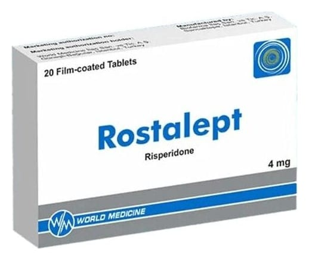

Rostalept 4 mg Film Tablet, Tablet, 20 Adet

Ne için kullanılır
KT · Bölüm 1 ROSTALEPT etkin madde olarak her bir film kaplı tablette 4 mg risperidon içerir. ROSTALEPT açık yeşil renkli, bir yüzü çentikli, oblong şekilli tablettir. 20 tablet içeren ambalajlar ile kullanıma sunulmaktadır. ROSTALEPT antipsikotikler olarak adlandırılan ve bir çeşit ruhsal bozukluk (psikoz) durumunda kullanılan ilaç grubuna dahildir. ROSTALEPT aşağıdaki durumların tedavisinde kullanılmaktadır. Halüsinasyon (olmayan bir şeyi görmek, işitmek veya hissetmek), kuruntu, zihin karışıklığı, saldırganlık, aşırı şüphecilik (paranoya), duygusal ve sosyal çekingenlik gibi düşünce, duygu ve/veya davranışlarınızı etkileyen durumların tedavisinde kullanılır. ROSTALEPT, ayrıca bu durumdaki kişilerin hissettiği ruhsal çöküntü, suçluluk duygusu, endişe ve gerginlik gibi belirtileri azaltır. Bozulan ruhsal durumun dengelenmesi için kullanılır [ani gelişen ve uzun süreli rahatsızlıklarda; bipolar bozuklukta (ruhsal durumdaki zıt yönlü değişiklikler) gözlenen taşkınlık nöbeti belirtilerinin kontrol altına alınmasında; agresif veya diğer yıkıcı davranışların ön planda olduğu davranış ve diğer yıkıcı davranış bozukluklarının tedavisinde; çocuklarda ve ergenlerde otistik bozukluğa bağlı huzursuzlukların (agresif belirtiler, kendine zarar verme, öfke nöbetleri, ani duygu durum değişiklikleri) tedavisinde].